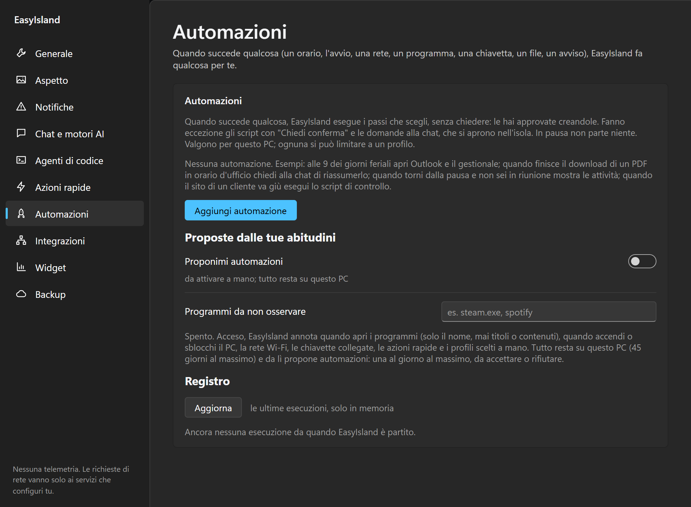
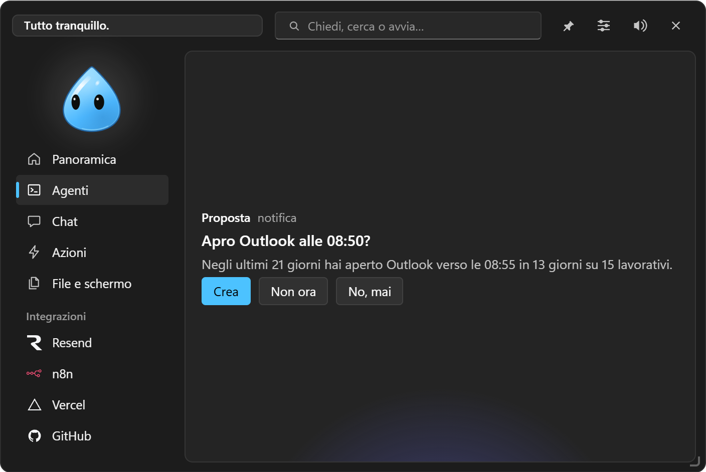

Automazioni
Regole «quando… se… allora…», create dalle Impostazioni, a parole in chat o proposte dalle tue abitudini.

#Quando
| Evento | Esempio |
|---|---|
| A un orario, nei giorni scelti | alle 9 dei giorni feriali apri Outlook e il gestionale |
| All'avvio del PC | dopo 30 secondi passa al profilo Lavoro |
| Allo sblocco del PC | un avviso con il promemoria del giorno |
| Al rientro dopo N minuti senza tastiera e mouse | riapri le app di lavoro |
| Collegandoti a una rete Wi-Fi | in ufficio apri la cartella condivisa |
| All'avvio di un programma | quando apri Teams esegui «Silenzia» |
| Un programma passa in primo piano | in Excel mostra l'avviso con le scorciatoie |
| Collegando una chiavetta o un disco | esegui lo script di backup |
| Un file arriva in una cartella | avvisami delle nuove scansioni |
| Un download finisce | apri la cartella dei PDF scaricati |
| Un'integrazione o un widget segnala un problema o una novità | se il sito del cliente va giù esegui lo script di controllo |
| Una chiamata 3CX in arrivo | apri la scheda del cliente |
| Una riunione Teams inizia o finisce | profilo Concentrazione durante la riunione |
| Un agente ha finito o aspetta un permesso | avviso quando Claude Code finisce |
| Un server di sviluppo parte | apri l'indirizzo nel browser |
Solo se (filtro): per cartelle, download, integrazioni, chiamate e agenti, parole o estensioni (.pdf) che l'evento deve contenere.
#Se
Condizioni, tutte vere (ognuna può diventare «se non»): fascia oraria e giorni (anche a cavallo della mezzanotte), rete Wi-Fi, programma aperto o in primo piano, a batteria o sotto una percentuale, assente da N minuti, in riunione (microfono o webcam in uso), davanti al cliente.
Ripeti: ogni volta, al massimo ogni N minuti, oppure una volta al giorno.
#Allora
Una sequenza di passi:
- eseguire un'azione rapida;
- mostrare un avviso nell'isola;
- cambiare profilo;
- aprire un programma, una cartella o un link;
- chiedere alla chat (si apre nell'isola con la risposta);
- avviare un compito;
- aspettare N minuti prima del passo dopo;
- chiedere prima di continuare: una card nell'isola con Continua / Annulla che elenca i passi seguenti; senza risposta in 3 minuti l'automazione si ferma.
Se un passo non riesce, i seguenti si saltano; con Continua dopo un errore vanno avanti lo stesso.
Nei passi puoi usare i dati dell'evento: {file}, {percorso}, {cartella}, {rete}, {programma}, {unità}, {testo}, {fonte}, {chiamante}, {numero}, {agente}, {progetto}, {porta}, {link}, {minuti}, e sempre {ora} e {data}. L'editor elenca quelli disponibili per l'evento scelto. Per sicurezza nei link sono codificati, negli argomenti di un programma sono un argomento solo, e negli script non entrano mai.
Ogni automazione si può limitare a un profilo e provare subito con Prova ora. Il Registro mostra le ultime esecuzioni. Le automazioni partono senza chiedere, perché le hai create tu, tranne gli script con «Chiedi conferma» e le domande alla chat. Con EasyIsland in pausa non parte niente.
#A parole, in chat
«Ogni giorno feriale alle 9 apri Outlook e il gestionale», «quando colleghi una chiavetta lancia il backup», «se il sito del cliente va giù avvisami»: la chat prepara l'automazione e l'isola te la mostra (Quando… / Allora…) con Consenti / Nega. Confermando, viene creata e accesa.
#Proposte dalle tue abitudini
Se lo accendi (Automazioni → Proponimi automazioni, spento di serie), EasyIsland annota quando apri i programmi (solo il nome, mai titoli o contenuti), quando accendi o sblocchi il PC, la Wi-Fi, le chiavette, le azioni rapide e i profili scelti a mano. Tutto resta su questo PC, al massimo 45 giorni, e si cancella con un clic.
Dopo qualche settimana propone, al massimo una volta al giorno, solo routine complete, mai «apro un programma a un'ora»:
- «Preparo il tuo Inizio giornata?»: la prima volta che accendi o sblocchi il PC nella solita fascia, passa al profilo che scegli di solito, apre insieme i programmi che apri sempre a quell'ora e, al mattino, ti fa il punto della giornata (appuntamenti, posta, ticket, attività). Una volta al giorno;
- sulla rete di un luogo: il profilo di quel luogo e i programmi che apri appena arrivi;
- gruppi: «Quando apri il gestionale, preparo anche Excel e Word?» (solo se sono almeno due);
- un'azione rapida quando colleghi una chiavetta;
- di spegnere un'automazione che non usi più.
Rispondi Crea, Non ora (te la ripropone tra un mese) o No, mai (la ritrovi tra le Proposte rifiutate). In Programmi da non osservare indichi quelli da ignorare.
